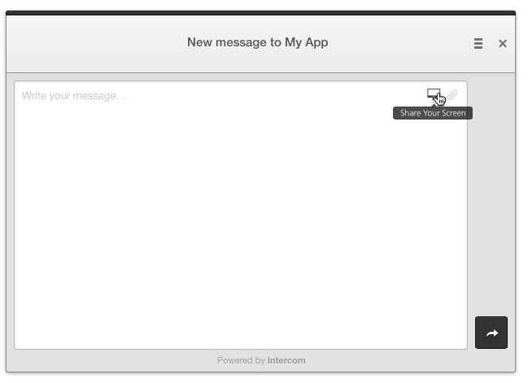
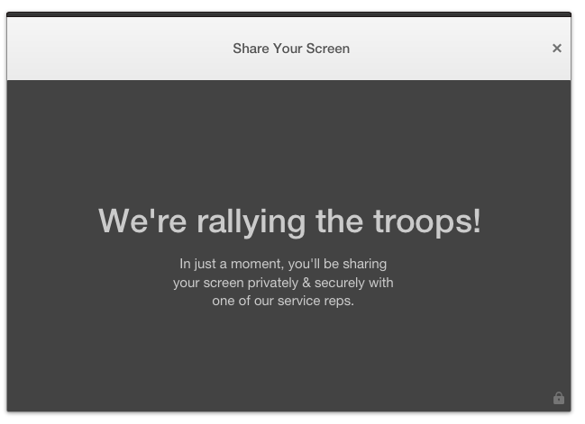
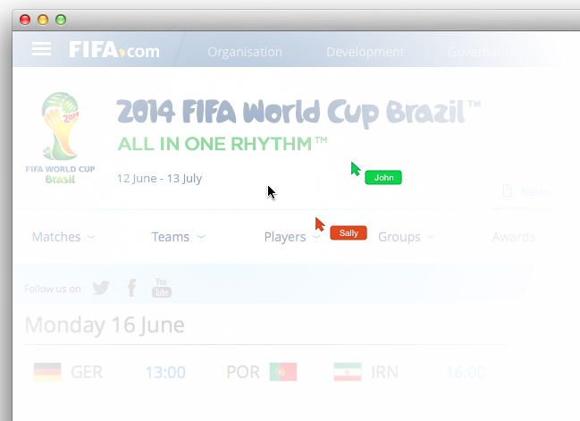

Dallas Read Cole Harbour, NS June 16, 2014
To Des and the Intercom team: Imagine: a user is running into trouble using a product. They see the fancy Intercom button and contact support. They start explaining their problem, but find it tough to put into words. Being un-technical, they have no idea how to take a screenshot. Instead, they click the "Share Your Screen" button:   When a service rep becomes available, the two (or more) can use the product together. They can see each other's mouse movements, clicks, and typing:  Among gazillions of other uses, shared browsing would be ideal for training, support, and bug reporting. We've been working on a shared browsing product that can work as described. Implementation would be minimal, dropping in 1 button to start a shared browsing session (plus any change in billing). Your customers would have no additional setup. I believe cobrowsing could offer an insane value boost to an already world-class product. Would you be interested in discussing how we can make this work in a way that's beneficial to both of us? Kind regards,Dallas Read dallasgood@gmail.com